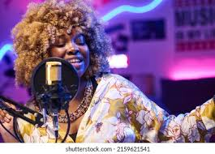

Clases de Canto
Programa General
Aprender con nosotros es buscar juntos la forma de que disfrutes y te sientas a gusto.
Somos mucho más que un profesor de Canto, somos la mejor Escuela de Canto en Buenos Aires. Te invitamos a comprobarlo.
- Clases con objetivos y abordajes personalizados, respetando tus necesidades.
- Podes probar libremente, cambiar de profesor o de actividad / instrumento en cualquier momento. Vas a estar rodeado de distintos instrumentos y músicos, con un equipo de profesores a tu disposición.
- Somos Profesionales, tenemos 30 años de experiencia y el mejor equipo de profesores del país.
- Tenemos cursos orientados para niños desde los 3 años, hasta los adultos mayores.
- Enseñamos con paciencia y buena onda, queremos que disfrutes de aprender.
Programa General
El objetivo es que puedas desarrollarte según tus necesidades. Utilizaremos diversos medios, libros, ejercicios, pistas y canciones populares. A continuación te comentamos brevemente algunos contenidos generales:
- Aprender a cuidar la voz para poder cantar con una técnica segura.
- Trabajar en la respiración adecuada, afinación, apoyo, voz de pecho, voz de cabeza, pasaje, colocación, búsqueda de timbre y color.
- Exploración de la voz como instrumento musical.
- Desarrollar la musicalidad, sentido rítmico, entonación, volumen e intensidad.
- Técnicas de cada estilo, exploración de estilos musicales (Rock, Pop, Blues, Funk, Jazz, Balada, Latinos, etc.)
- Desarrollo de la creatividad y expresividad a traves de ejercicios y propuestas.
- Interpretación a través de la expresión corporal, la relajación y la puesta en escena.
- Preparación de Repertorio.
- Familiarizarse con equipos de sonido y otros instrumentos.
- Participación en actividades grupales, canto grupal y formación de bandas musicales.

